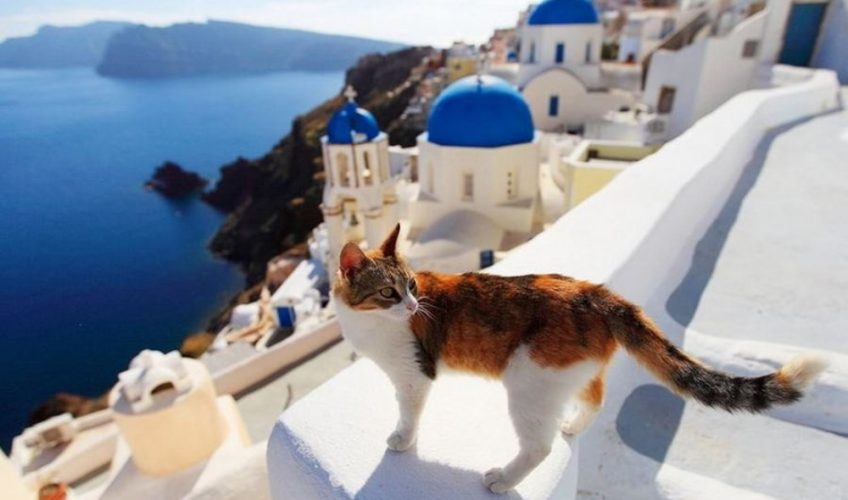

Кошки могут быть очень ласковыми, но за безобидной внешностью прячется древний хищник, готовый убить не раздумывая.
Рядом с нами живут существа, проигнорировавшие несколько тысяч лет эволюции, но мы продолжаем любить их, даже не задумываясь об этом.
Непосредственным предком четвероногих обитателей наших квартир был степной кот Felis silvestris lybica (F. s. lybica), который и сегодня живет в Северной Африке. Американский генетик Карлос Дрисколл и его коллеги в 2007 году выяснили, что около 10 000 лет назад как минимум пять самок F. s. lybica были взяты из дикой природы в дома и именно они стали прародительницами всех современных домашних кошек. Между степным котом и нынешними домашними любимцами много генетических отличий, но тем не менее при скрещивании у животных рождаются котята. Незапланированные романы происходят частенько, поэтому вскоре вид F. s. lybica может совсем исчезнуть, и всему виной будут кошки местных жителей.